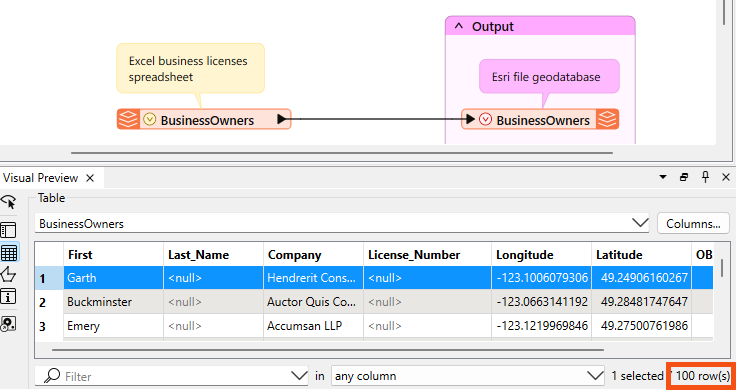
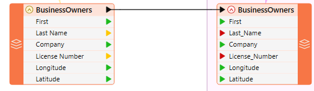
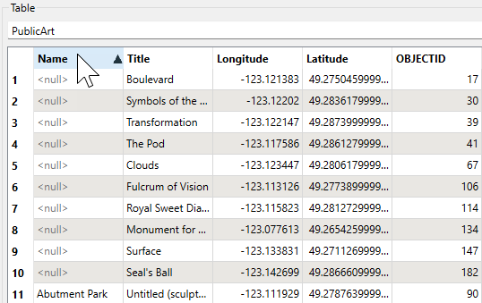

In addition to 2D or 3D view modes, you can view attribute data for features in table format.
After completing this lesson, you’ll be able to:
In addition to 2D or 3D view modes, you can view attribute data for features in table format.
Sven continues to work on his Excel to geodatabase workspace using FME Workbench (2024.0 or later). He inspects the Vancouver.gdb output by right-clicking on the Vancouver [FILEGDB] writer in the Navigator and selecting View Written Data…. This will show BusinessOwners and PublicArt in Visual Preview. If Sven had selected View Written Data on a writer feature type, only that feature type would have been displayed in Visual Preview.

The Table view now displays BusinessOwners.
The Navigator window is a structured list of parameters representing and controlling all of a translation's components. It displays an overview of the source (reader) and destination (writer) information, bookmarks, workspace parameters, and transformers.
Generally, it is a hierarchical view of the information in the graphical pane. You can adjust most datasets, feature types, and transformer parameters from here and directly on the canvas.
After running the translation, the bottom-right corner of the Table view shows the number of rows (100). This number matches the feature count on the feature connection line on the canvas. Sven uses this count to confirm that all his features have been written. He sees that 100 features were read and confirms that 100 exist in the written data.

Remember that a feature is a single row in a table or a single piece of geometry (point, line, polygon, etc.) and its associated attributes.
The Table view shows an extra attribute: OBJECTID. The writer may create additional attributes if the format requires, as in this case. All Esri geodatabase datasets contain an OBJECTID attribute. An ObjectID is a unique, non-null integer field used to identify rows in tables in a geodatabase uniquely.
Sven checks that all the desired columns (feature attributes) are present and have values. Sven notices that the entries for Last_Name and License_Number are all <null>. This is typically a bad sign; null means no value for that attribute. On the canvas, Sven clicks on the red triangle on the BusinessOwners writer feature type to see the feature type’s attributes. The triangles are red beside the attributes with null values. The red triangles indicate that the attribute is not mapped to a source attribute. This occurred because the spaces in Last Name and License Number were converted to underscores. The spaces were converted to underscores because the Esri geodatabase format does not support spaces in attribute names.

Vancouver.gdb also contains the PublicArt feature class. Sven clicks on the drop-down triangle beside BusinessOwners and changes the table to display data for PublicArt.

Sven notices that PublicArt is not sorted alphabetically by name. He clicks on the Name heading to sort the column alphabetically. This is also a way to find <null> attribute values. Null attributes will appear first.

Sven’s colleagues are interested in birds, and he is curious if there is any bird-related public art. He enters "bird" in the filter at the foot of the Table view. The Table view then filters to display the three features with "bird" in an attribute value.

Make sure you have followed along with Sven’s steps.